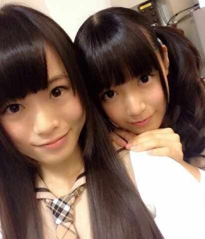

| 2014/02 03 Mon | ひめたん(*>ω<*)そ の403 |
きゅんきゅん王国 に決定しました


考えてくれたみなさん
本当にありがとー♪
＼ きゅんきゅん王国のひめたん ／

うん！みなさんのことは
ひめきゅんさんって呼んでるしね！
なんかややこしいかな
ひめきゅんさんが集まって
きゅんきゅん王国ってゆ意味ね＊＊
そーゆーラブリーなやつは苦手やねんとか
いう人もいるかもしれないんだよね
うーん......
慣れて(・ω・)ね
でもほんとに
全部書き出してみたんだよー
みなさんセンス良すぎるねー♪♪
ほんとにありがとーね☆
僕も私もひめきゅんさんになりたいけど
どうすれば？って方がたくさんいるんだけど
ひめたんにきゅんってしたら
あなたはもうひめきゅんさんだよー！
いつでも仲間入りしておいでねっ
ちなみに肩にホクロがあります
だれも聞いてないね！知ってる！
さーて2月5日は
1ST YEAR BIRTHDAY LIVEDVD発売日＊
ひめたんはみなさんよりもひと足お先に
拝見しました
なんてゆーか、みんな幼い／( ^ω^ )＼
みんなの成長が
感じられるんじゃないかと思！
当時の持ち歌全曲披露ってことで
結構なボリュームだったなー
2年目の今年はどうなるんだろうかな......
わくわくしてきた！
わくわくしたらお腹痛くなってきた！
DVDの発送も
今年のお誕生日ライブも
楽しみにしててくださいなー♪
昨日はツインテールの日だってね！
そんなラブリーな日とも知らず
ひめたんは「ロックだねー」を多用した日でした
なんのことやら。
まいまい、らりん、みさみさとひめたんだけの
完全身内ネタです←
公式ブログなのにねー
ごめんなさいねー(´・ω・｀)笑
ちなみに昨日はみなさんの大好きな
ひめたん結びをしてました。
ツインテールの日......
ら、来年こそは(｀；ω；´)

れなち (山崎怜奈ちゃん)＊
真面目がーるです
ひめたんも見習わねば！

 ひめたんが使ってるシャーペンやペン
ひめたんが使ってるシャーペンやペン
何使ってるか教えてー
シャーペンはクルトガ(ぴんくドット柄&アリス柄)
ノートは STYLE FIT とかかなあ
質問返しのペンは無印良品です！
 -{}@{}@{}- ←これ何に見える？
-{}@{}@{}- ←これ何に見える？
焼き鳥(((o(*゜▽゜*)o)))
すごーい！玉ねぎすごーい！
ひめたんはどこのブランドの
お洋服を買っていますか？
是非参考にさせて頂きたいです！
おにゃーのこから
こーゆー質問たくさんくるー嬉しいー♪♪
◎earth music&ecology
◎LODISPOTTO
◎LIZ LISA
あと、撮影で着させていただいて
◎POU DOU DOU
が気になってるー＊
上下組み合わせるのが苦手なので
最近はワンピしか着ません←
どうやったら彼女できますか？
回答待ってます（ニッコリ
バレンタイン近いやーん
逆チョコしーなーよ！
あれは？寧々ちゃん兄みたいに
バク宙を身につけたら？
あとはぴんくのお洋服似合う人はね
モテると思うよーわからんけどー♪
ひめたんは、犬に洋服を着せたい派？
着せたくない派？かめはめ波？
わんちゃんのあの
もふもふ感がいいよねっ
ひめたんもお洋服は着させたくないなー
あーでも わんちゃんが嫌じゃないなら
お耳にりぼん着けてあげたいかな
強要する気はないけどね◎
......うん？最後何か言ったかな？気のせいかな
 ひめたーんは休日とか暇な時とかに
ひめたーんは休日とか暇な時とかに
なにしてるのー？
今はコメント読んだり
質問返しのストック貯めてると
１日が終わるんだよねー
楽しいよ(＊^ω^＊)アイドルって感じでしょ？
でもねー夢中になれる趣味が欲しいんだよね
真夏さんのお菓子作りとか若様まいまいの絵とかね
うーんちょっと考えてみるー
中3組のイタい子担当はひめたんですか？
ちょっと待って！ちゃうよ！
あれはみんなイタい子って意味で付けたんよ！
ほら、年を偽って(そこの自覚はある)
中３って名乗っちゃうなんて
私たちイタいかしらって意味であって
ひめたん１人を指すわけじゃないだーよ(｀；ω；´)
「き」から始まる言葉で
ひめたんが1番かわいいと思う単語は何？
きゃきゅきょかわいいよね！
脚立。気球。恐竜。きゅうり。とかね
きゅんきゅんって響きもかわいいでしょ？
次回の握手会までに
蝶ネクタイを買おうかなと思っているんだけど、
無地のタイプが
チェックなどの柄が入ったタイプなら
どっちがいいと思いますか？
どっちもかわいいと思うから
そこはお任せしますよー∩^ω^∩
おそろっちやーおそろっち♪
ひめたんのブログの
コメント欄下２ケタに46を踏んだ方へ
手書きでコメ返するコーナー
＼ ひめたん46 ／

いつもたくさんのコメント
本当にありがとうございます＊
なんか、なんでもない記事なのに
コメントたくさんでびっくり。
いつもみなさん忙しいのに
たくさんかわいがってくれて
ひめたん嬉しいよー♪
語彙読解力検定ね
ひめたん見た目によらず頭いいんだねーって
それ褒めてますか(´・ω・｀)うんありがとう
カレーこぼしちゃうんなら
食べなきゃいいじゃんーって
正解！その発想はなかったなー
......ん？←
(＊´・ω・＊)
コメント(521)
2014/02/03 23:24